Data Sorting, Filtering, SQL Queries and Joining Tables
Student: Aruzhan
Group: (write your group in adjust_here.py or on the Excel Settings sheet)
Date: 9 November 2026
Dataset: university educational process from Practice Work 2
I continued the university database from Practice Work 2. It stores students, groups, teachers, departments, courses, classrooms, the class schedule and grades. There are 15 groups, 15 students, 15 teachers, 15 departments, 15 courses, 15 classrooms, 15 schedule rows and 15 grades.
The task sheet uses the names Subjects and grade. In my database the subject table is called Courses, and the mark is stored in grade_value on a scale of 0–100. The queries use those names.
The saved examples use group 1 (IT-21, year 1, Software Engineering), a last-name search for Aliyeva, a search for student id 1001, and a two-condition filter gender = F and group_id <= 5.
To change those examples and rebuild the workbook, the SQL file, the screenshots and this report together, edit the ADJUST block at the top of adjust_here.py and run python3 build.py. To change a filter only in the spreadsheet, use the header arrows on the Students sheet, or the yellow cells on Settings together with the orange Live sheets (Excel 365 or Google Sheets). To change the SQL only, edit the INSERT into settings in sql/practical_work_7_10.sql and run the section “Queries that read the settings table”.
I sorted the Students sheet by last name from A to Z. The first row is Abilov Sanzhar and the last row is Zholdas Madina. All 15 students remain visible.
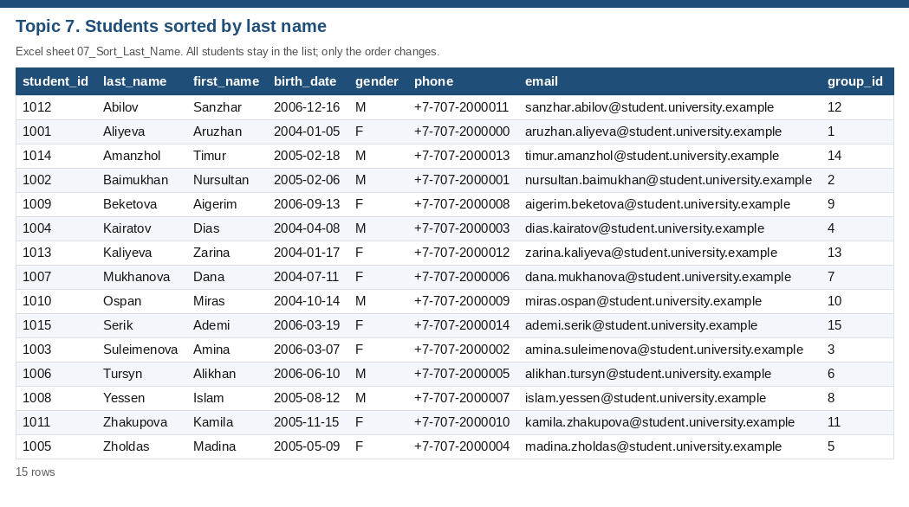
I also sorted the same sheet by group_id. The order matches the original student_id order, because the Practice Work 2 list places student 1001 in group 1, student 1002 in group 2, and continues in the same way through the last student. The sort is still a group sort: the key is group_id.
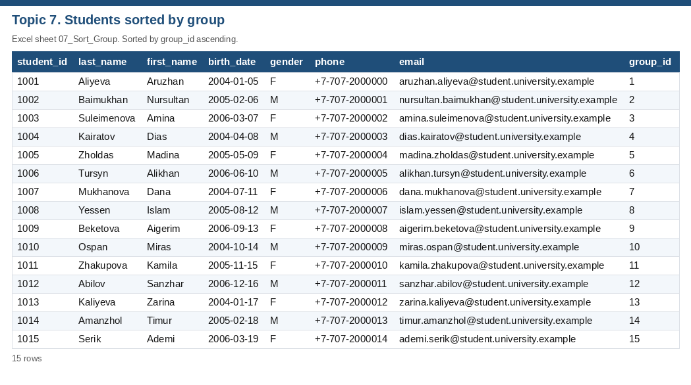
I filtered the students to one group, group 1 (IT-21, year 1, Software Engineering). The filter returns Aruzhan Aliyeva.
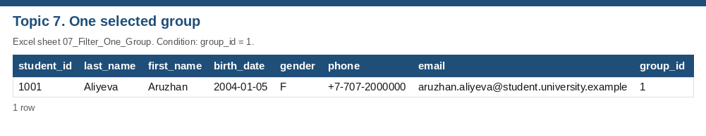
I searched by student id 1001 and found Aruzhan Aliyeva. I searched by last name Aliyeva and found Aruzhan Aliyeva. In SQL the last-name search uses COLLATE NOCASE, so the capital letters do not matter.
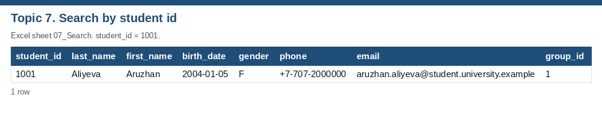
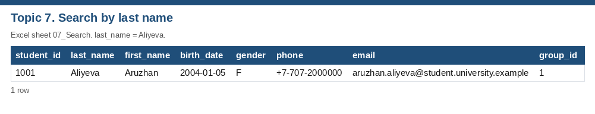
I then filtered with two conditions at once: gender = F, and group_id <= 5. A row must satisfy both. The result is Aruzhan Aliyeva, Amina Suleimenova, Madina Zholdas. All of these students are in year 1.
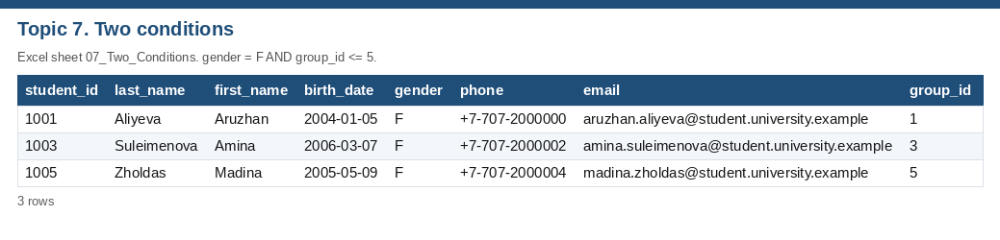
I loaded the eight tables into SQLite (db/university.sqlite) and ran the queries in sql/practical_work_7_10.sql. The first queries only display data. SELECT * FROM Students returns every column. The second query returns student_id, first_name and last_name. SELECT * FROM Groups returns the groups. The subject names come from Courses, because that is the subject table in this database.
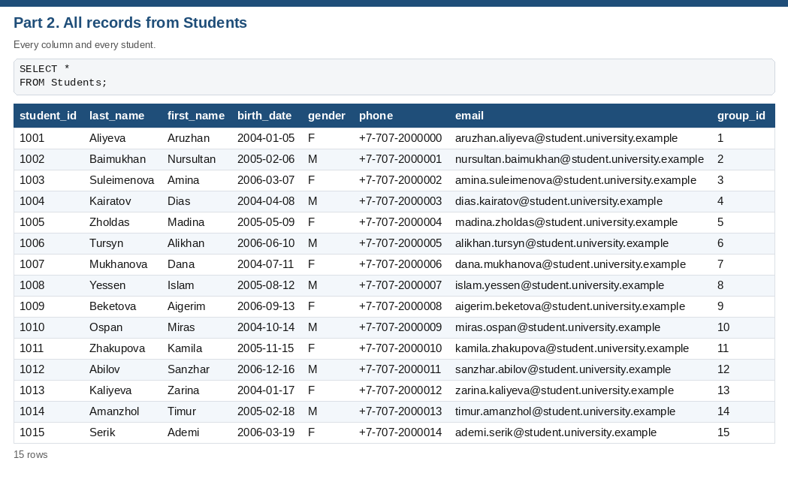
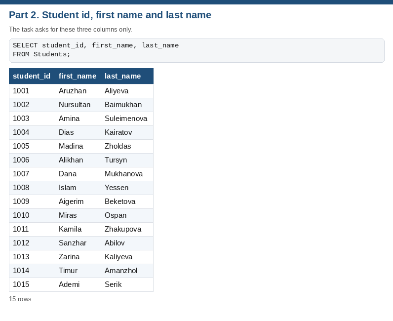
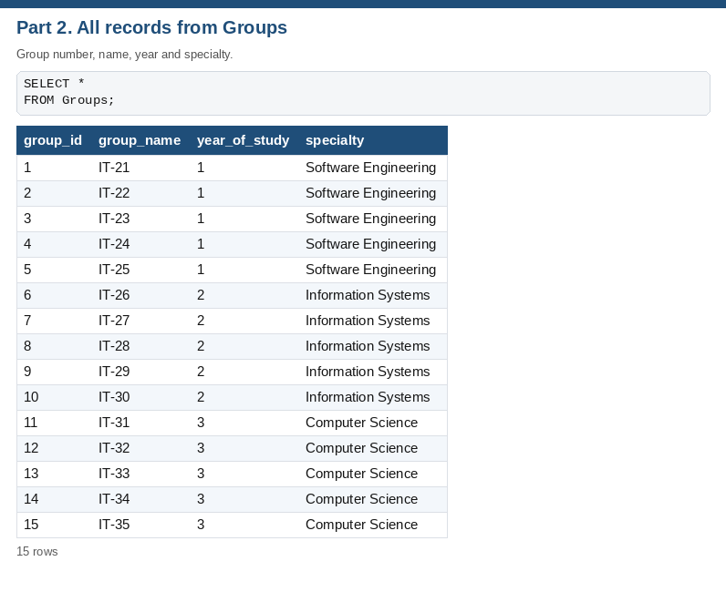
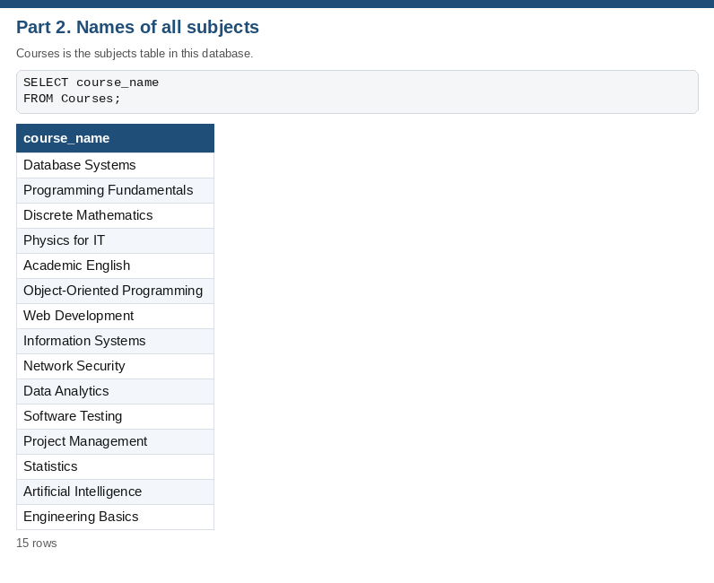
WHERE group_id = 1 returns Aruzhan Aliyeva. ORDER BY last_name ASC returns all 15 students in alphabetical order. COUNT(*) returns 15. GROUP BY group_id returns one count per group; in the current data, every group has exactly 1 student.
MAX(grade_value) returns 96 (Kamila Zhakupova in Software Testing (2026-05-11)). MIN(grade_value) returns 61 (Alikhan Tursyn in Object-Oriented Programming (2026-05-06)). AVG(grade_value) returns 77.73. The exact SQLite value is 77.73333333333333.
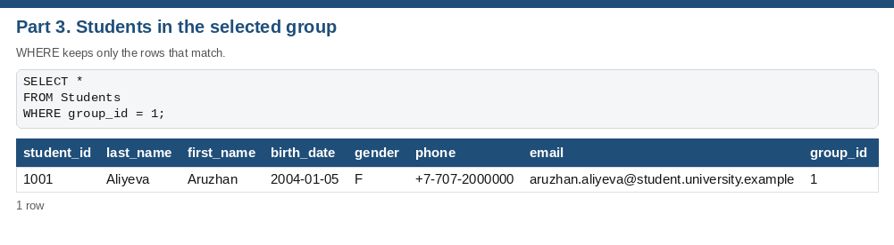
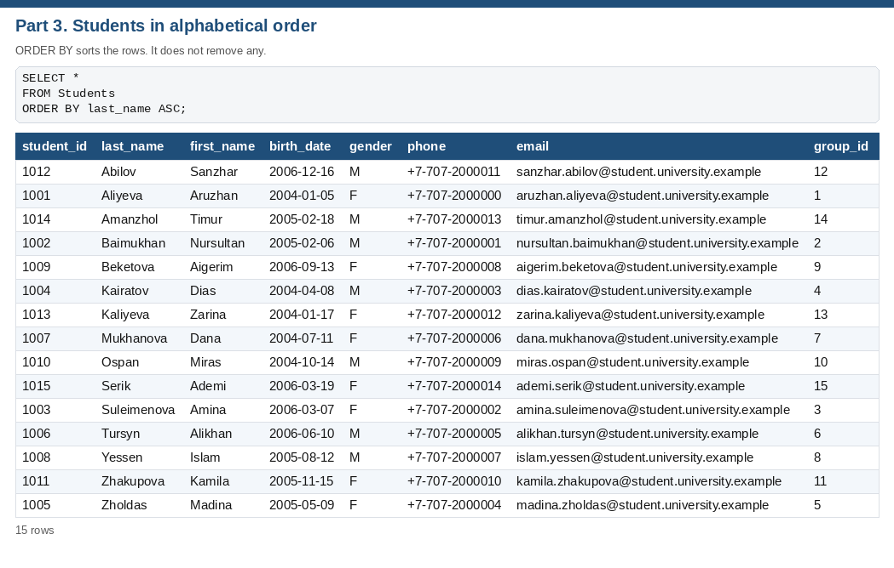
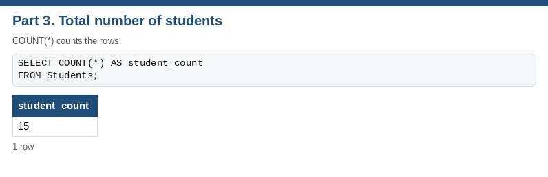
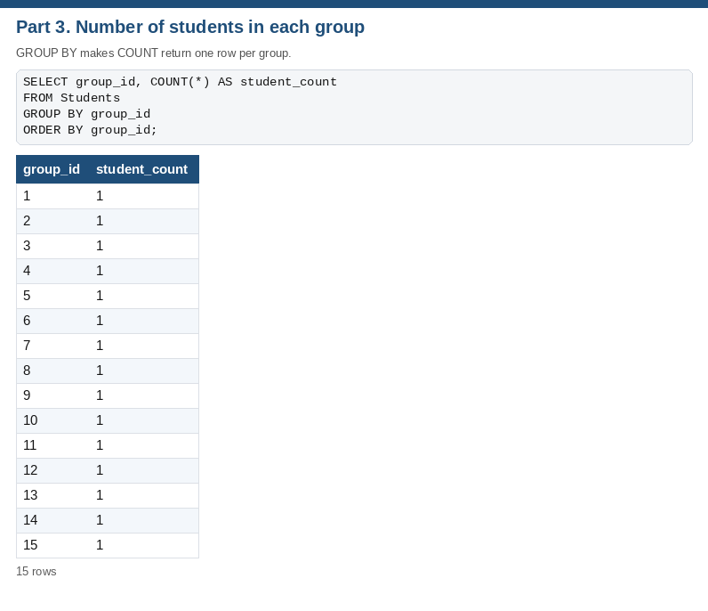
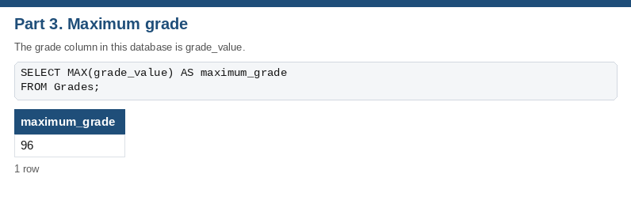
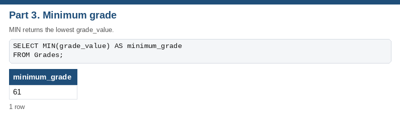
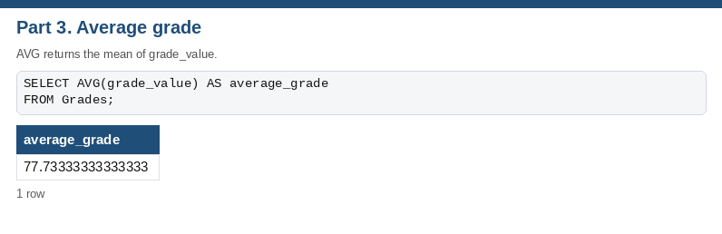
The tables stay separate. Students stores group_id, not the group name. Groups stores the name once. Grades stores student_id and course_id, not the student’s name and not the subject name. JOIN matches the shared id and shows the related columns on one row.
| Result | Column in the first table | Column in the second table |
|---|---|---|
| Student name with group name | Students.group_id | Groups.group_id |
| Student with grade | Grades.student_id | Students.student_id |
| Subject name with grade | Grades.course_id | Courses.course_id |
| Department with its courses | Courses.department_id | Departments.department_id |
For student 1001, the Students table shows group info 1. After INNER JOIN Groups, the same student shows group info IT-21. The original tables are unchanged. The query only reads them together.
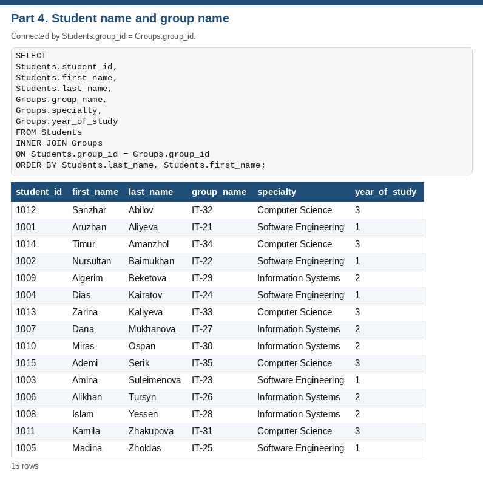
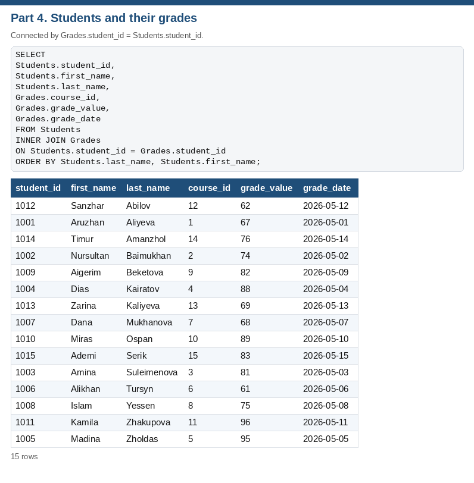
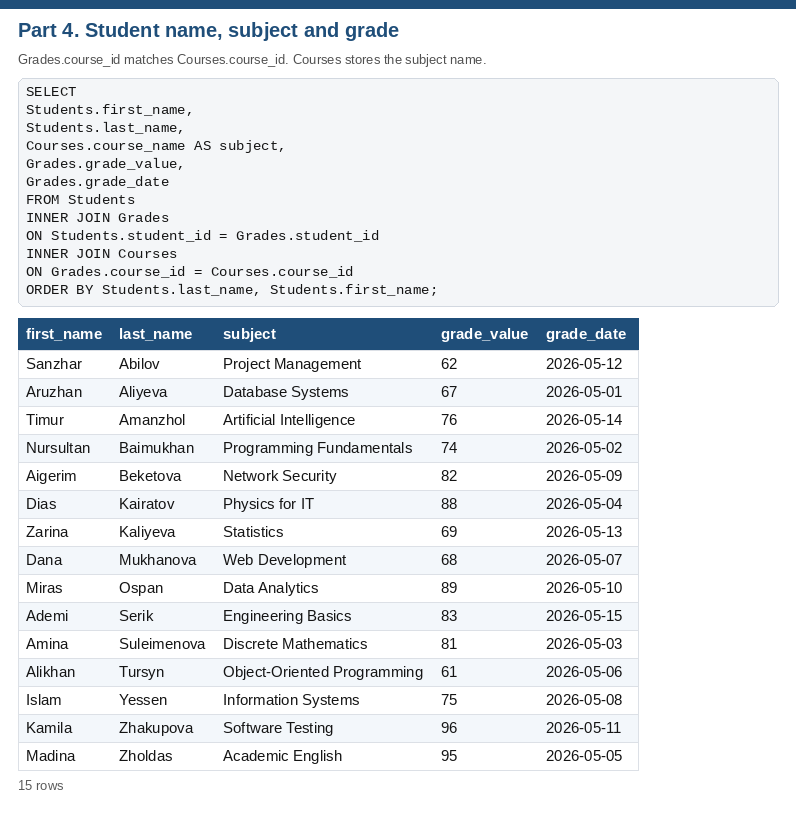
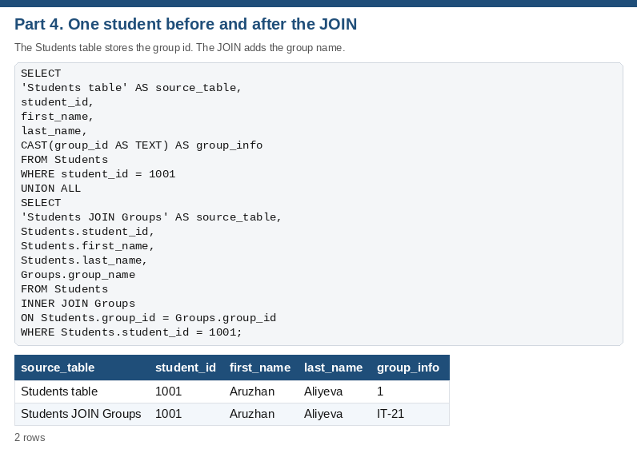
INNER JOIN returns 15 rows, one for each course. LEFT JOIN returns 17 rows. The extra rows are Economics, General Studies: those departments have no course, so course_name is NULL. Information Technology (2 courses) and Software Engineering (2 courses) appear on more than one row because each course is its own row.
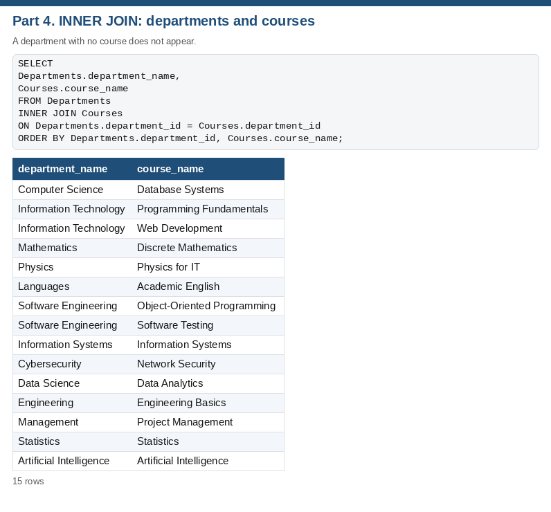
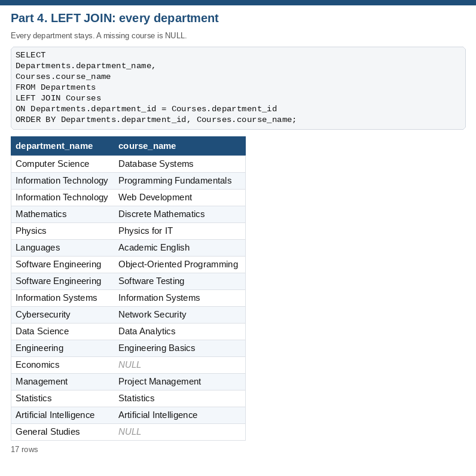
Sorting changes the order of the rows and keeps every row. Filtering hides the rows that do not match a condition. Searching finds a row by a specific value, such as a student id or a last name. In this work, sorting Students by last name still shows all 15 students, with Abilov first. Filtering to group 1 (IT-21, year 1, Software Engineering) shows Aruzhan Aliyeva and hides the other students.
SQL is the language used to work with a relational database. It creates tables, inserts the rows, and then retrieves or updates them. I used it to display the university tables, to filter and sort students, to summarise grades with COUNT, MAX, MIN and AVG, and to bring related tables together with JOIN.
WHERE decides which rows are included. ORDER BY decides the order of the rows that were included. WHERE group_id = 1 returns only that group. ORDER BY last_name ASC returns every student, arranged alphabetically. WHERE does the filtering. ORDER BY does the sorting. One query can use both.
An aggregate function turns many rows into one value. COUNT counts rows, MAX and MIN find the largest and smallest values, and AVG calculates the mean. GROUP BY divides the rows into groups before that calculation, so the function returns one result per group. COUNT(*) on Students returns 15. With GROUP BY group_id, the same function returns a separate count for each group (every group has exactly 1 student). On Grades, MAX is 96, MIN is 61 and the average is 77.73.
JOIN combines columns from related tables into one result. The database stores each fact once: the group name lives in Groups, and Students stores only group_id. Matching Students.group_id to Groups.group_id shows the student’s name and the group name together without copying the group name into every student row.
INNER JOIN returns only rows that have a match in both tables. LEFT JOIN returns every row from the left table, and fills the right-hand columns with NULL when there is no match. INNER JOIN returns 15 rows, one for each course. LEFT JOIN returns 17 rows. The extra rows are Economics, General Studies: those departments have no course, so course_name is NULL.
The same university tables can be sorted and filtered in the spreadsheet and queried in SQLite. WHERE and the Excel filter choose rows, ORDER BY and the Excel sort choose the order, GROUP BY with aggregate functions summarises rows, and JOIN reads related tables together through the shared ids.
Files: University_Database.xlsx, db/university.sqlite, sql/practical_work_7_10.sql, sql/query_results.txt, the screenshots folder, and this report.